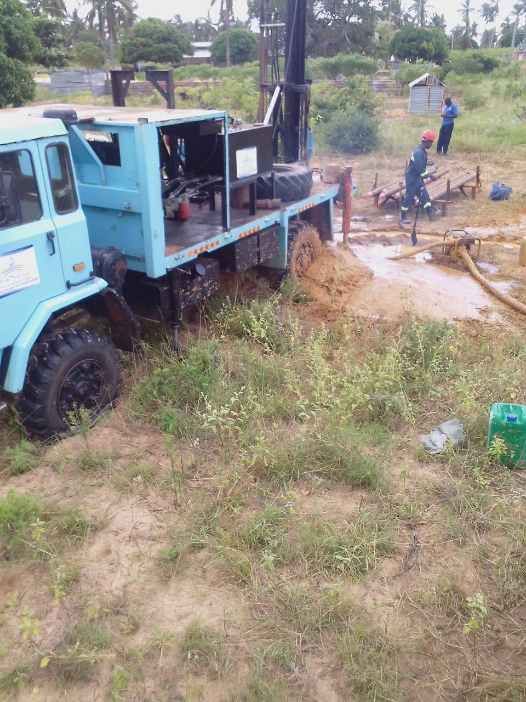
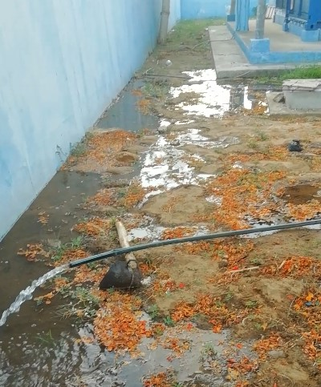

Portfólio

Projeto de captação de água potável em área rural.

Furo artesiano em propriedade comercial.

A amostra da área apresentada demonstra que estamos em um aquífero, indicando uma zona potencial para captação de água.